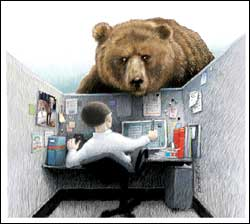

Beat stress by understanding your body’s responses to danger.
We live in an overstressed society, and unfortunately, stress often has serious consequences for our health. Stress contributes to indigestion, headaches or muscle aches, sleeplessness and anxiety - not to mention high blood pressure and heart disease.
In addition, stress can lead to unhealthy behavior, such as overeating and smoking. As a tobacco-treatment specialist and personal counselor, I find that almost all my clients struggle with stress. In fact, many consider it the single biggest obstacle to overcoming tobacco addiction.
Many people turn to pharmaceutical drugs or herbal medication to treat the symptoms of stress, but it’s even more important to address the root cause of the problem. I have found that one helpful tool for stress reduction is to learn more about the body’s physical responses to stress and how to better control them. To do that, it’s useful to spend some time thinking about how our stress responses might have evolved in the first place.
Imagine you are an early human hunter-gatherer. You spend much of your time crafting tools, sharing oral histories with your clan, gathering food and hunting. What a different world! You have no traffic to contend with, no stacks of papers piling up at work and no television relaying news of catastrophes from around the globe. Instead, you live your life at a local level, and you have a great deal of free time.
Prehistoric life is not stress-free, however, and at times your very survival is at stake. Hunting, for example, may mean life or death for you or your family. And there’s always the possibility that a hungry bear will stumble into your camp. Unlike traffic jams and job stress, these are immediate, life-threatening situations, and the body’s natural responses prepare us to deal with them.
In his lecture entitled “Breathing,” Dr. Andrew Weil of the University of Arizona’s Center for Integrative Medicine explains the importance of the autonomic nervous system, which controls many of our body’s unconscious functions. This system has two branches: the sympathetic and the parasympathetic.
Most of the time, we operate in the parasympathetic mode, which allows us to carry on with our basic life functions at the usual pace. But consider what happens to you - the hunter-gatherer - when a giant proto-grizzly arrives on the scene looking for lunch! Now your body switches to the sympathetic mode. Your heart beats faster, your blood pressure rises, and your breathing becomes rapid and shallow as your body prepares to protect itself. It’s fight or flight, and you are ready for action!
What has just happened is that your body has quickly and efficiently directed its resources to where they are most needed: Your lungs rapidly take in oxygen and blood is pumped to your largest muscles, while other body functions - such as your digestive function - slow down to help conserve energy that is needed elsewhere. Additionally, your body is flooded with adrenaline and cortisol, two sympathetic hormones that enhance speed and reaction acuity. Mammals that exhibit these traits are more capable of surviving the dangers of the wild. Those that lack these mechanisms are more likely to be eaten. As a result, these successful survival traits have been passed down the genetic line.
These days, stress usually is not a signal that we are facing immediate threats to life and limb, but our bodies are still reacting as though we were in true peril. When you watch a horror movie, your heart rate goes up and your blood pressure rises even though the threat is imaginary. Your body reacts to the imagined danger when you feel stressed.
However, the modern pressures we face, while not usually life-threatening, are more or less constant. When we go through life feeling constant stress, our bodies never get a chance to go into relaxation mode, or the parasympathetic mode, which causes a lowered heart rate, lowered blood pressure, deeper breathing, improved digestive function and better circulation to our extremities. What’s more, when our bodies are operating in the parasympathetic mode, our systems are flooded with the compounds relaxin and serotonin. These hormones not only help us feel calm and give us a sense of well being, but also counteract the sympathetic hormones adrenaline and cortisol, which damage the body when you spend too much time in a stressed state. Although sympathetic hormones are useful in a “fight-or-flight” situation, they produce within us something like a turbocharged mode of operation. A machine constantly running in this fashion would soon begin to fail.
Many methods can help people effectively cope with stress, ranging from eating a healthier diet and getting more exercise to learning to be more assertive in stressful situations. But perhaps most important is learning to relax, which will turn on the parasympathetic mode of your autonomic nervous system. How do you relax? I have found that two methods seem to work especially well.
The first method is to do nothing: Just be aware of what is happening around you at this moment. At first, this may be an alarming idea; in American society it is considered a waste of time to do nothing. But letting go of the urge to fill every minute with activity can help reduce stress. This includes surrendering mental activity - try allowing your thoughts to relax. Think about how relaxed you felt the last time you stopped to watch a sunset or listen to birds singing. Often, taking a few minutes to notice the beauty of nature can help reduce your stress level.
If doing nothing is too difficult, try to focus on your breathing instead. Weil calls breathing “the doorway to control the autonomic nervous system,” and for good reason. Changing the way you breathe affects which branch of the autonomic nervous system is functioning.
The stress response causes you to have rapid, shallow breath, and even if you were not stressed, you could cause your body to become stressed just by consciously sustaining rapid, shallow breathing. By reversing this process, you can make your body relax. Mimic the parasympathetic mode of breathing by taking deep, slow breaths, and your body will return to its natural state of relaxation.
The beauty of this approach is that you can do it anywhere. Wherever you are, and no matter what problems you have to contend with, you can always choose to slow down just by taking a few deep breaths.
On the other hand, if during the course of a leisurely day, you take a walk through the forest and you do happen upon a bear, spare a split second of gratitude for the usefulness of adrenaline - and then head for the hills.
John Titan is a certified tobacco-treatment specialist and leads numerous workshops on the topics of stress reduction, breathing for relaxation and meditation.
|
 |
|
|